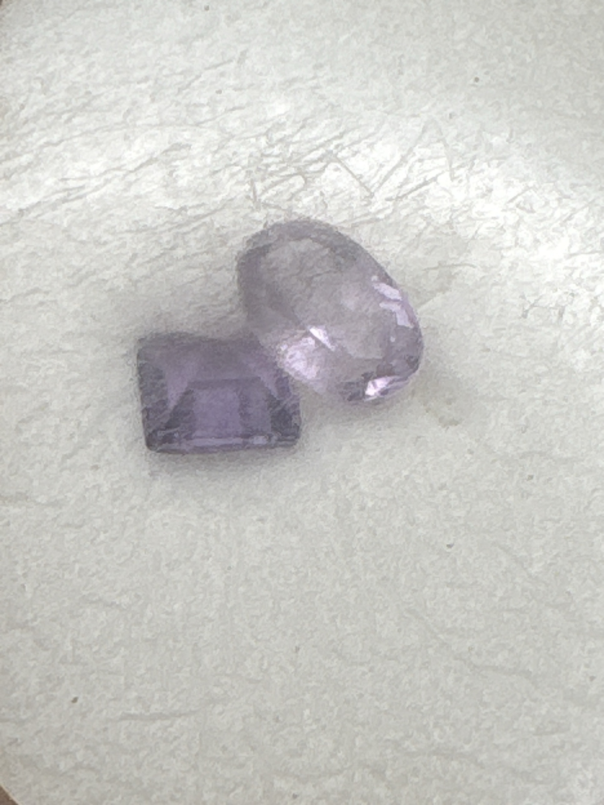

The Gem Drawer › No. 123

A hexagonal step cut and an oval brilliant in medium purple, with certificate.
| Catalogue no. | #123 |
|---|---|
| As labeled | Amethyst, 2 stones (certificate describes only 1 stone at .50ct - certificate used for species reference only, not weight/count - see notes) |
| Shape / cut | Hexagonal/step cut (1), oval brilliant (1) |
| Weight | Not recorded |
| Measurements | Not recorded |
| Colour | Medium purple (both stones) |
| Clarity / condition | Not recorded |